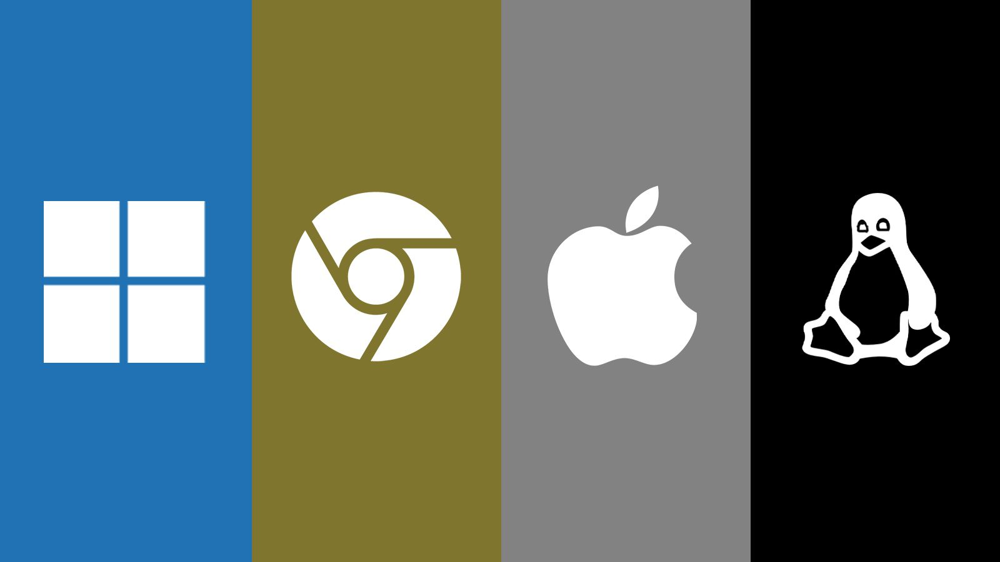

O que é um Sistema Operacional?
Sistema operativo ou sistema operacional é um programa ou um conjunto de programas cuja função é gerenciar os recursos do sistema, fornecendo uma interface entre o computador e o usuário ou utilizador.

Kernel - O que é?